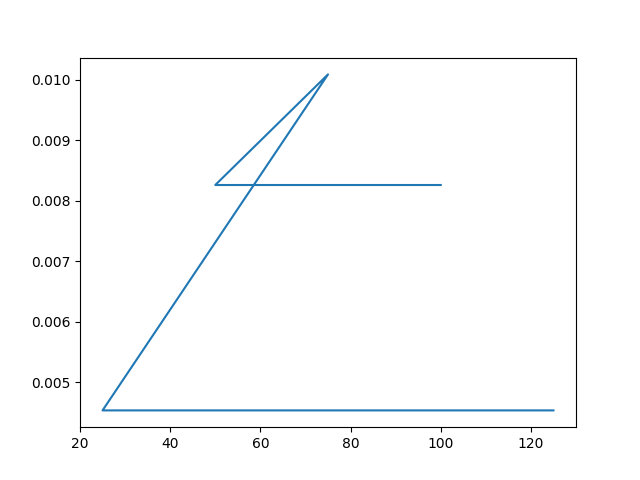
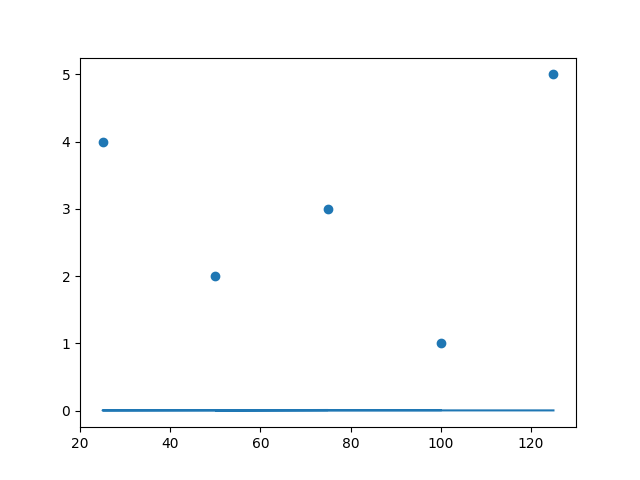

Mean of Attribute amount
75
Median of Attribute amount
75
Mode of Attribute amount
75
Skewness/Kurtosis for amount
skewness:0.0,kurtosis:-1.3
-Mode of Attribute amount
39.528470752104745
Quartile Deviation of Attribute amount
25.0
Correlation for table TRANSACTIONS for attributes amount transaction_id
There is a Low positive correlation b/w the attributes amount and transaction_id, meaning they grow with each other
-